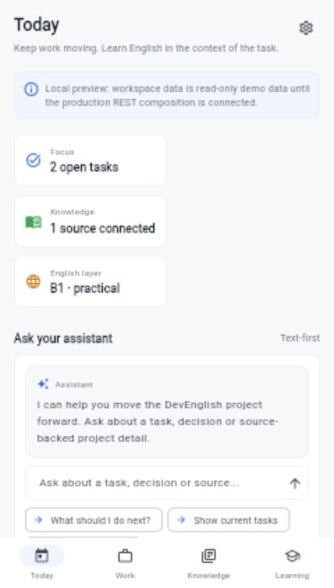
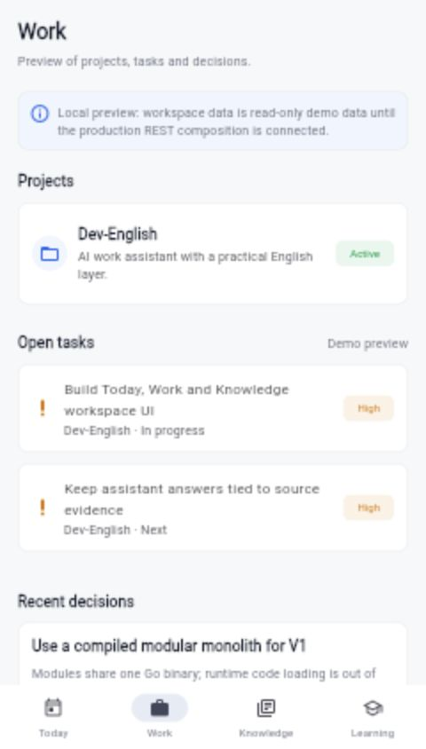
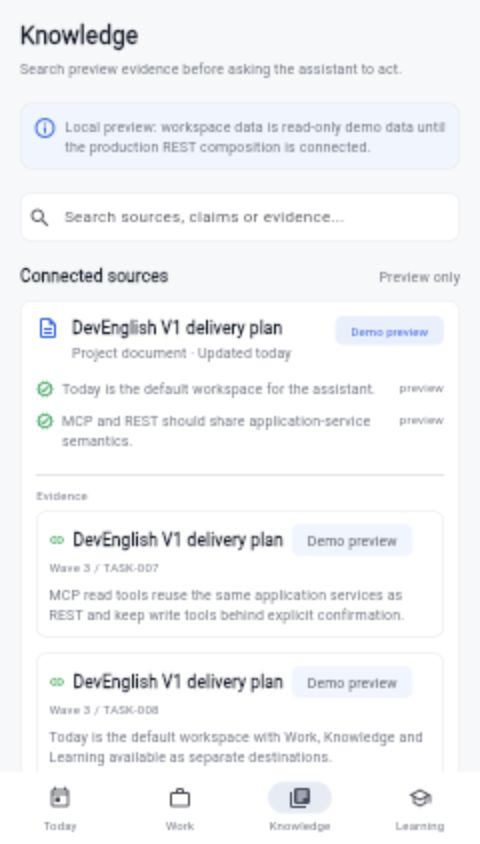
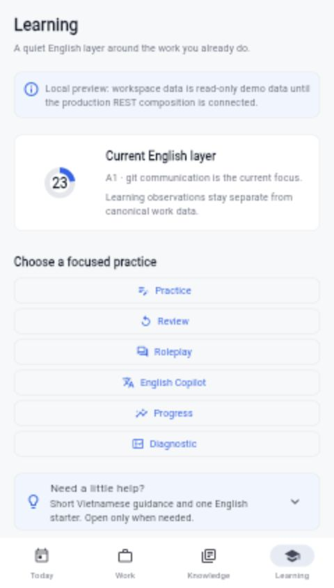
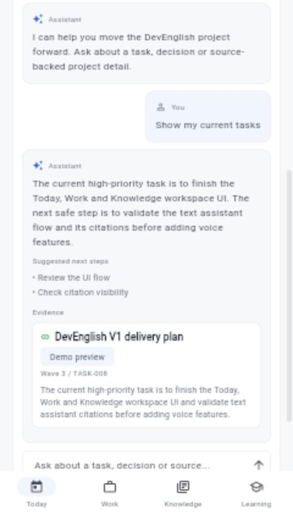

DevEnglish V1 · Product reset · 2026-08-29
Implementation evidence for the new work assistant
The canonical implementation now connects the workflow from work capture to sourced knowledge, grounded assistant answers, safe action receipts and an English learning overlay. Assistant conversations can also stay pinned to the exact canonical work or source record being discussed.
Release boundary: local implementation evidence is substantially complete through S7. The raw 90% gate for the seven V1 core backend packages passes on a PostgreSQL-enabled profile, and the current overall profile is above the recorded R0 baseline. This report is not a release approval: the real-device/operator U0 verdict, lifecycle acceptance, current independent review and human authorization for Git operations remain open.
What is implemented
Slice evidence
| Slice | Result | Evidence and remaining boundary |
|---|---|---|
| R0 | Baseline recorded; gate open | UX audit, flows, tokens, high-fidelity specification and prototype exist. Coverage baseline is recorded; operator/device verdict is still required. |
| S1 | Verified | /api/v2/bootstrap, canonical Flutter Workspace shell and API/domain/controller contracts. |
| S2 | Implemented and tested | Project/Task/Decision CRUD, optimistic conflict, history, trash/restore/purge and Today next-action path. |
| S3 | Implemented and tested | Knowledge source/revision/chunk/claim/evidence, FTS, multilingual-e5-small sidecar/RRF and Drive/GitHub incremental read sync. |
| S4 | Implemented and tested | DeepSeek routing, grounded response normalization, usage reservation, transient retry, challenges, receipts and context-pinned conversations. |
| S5 | Implemented and tested | Work-derived learning overlay, isolated observations, editable transcript and on-demand TTS contracts. Full replacement/device UX remains open. |
| S6 | Implemented and tested | Streamable HTTP /mcp with required JSON/SSE negotiation, optional protocol-version validation, separate bearer token/scopes, tools/resources, replay and REST parity checks. Official MCP Go SDK conformance passes. Product-client handoff is documented in docs/project/MCP_CLIENT_SETUP.md; operator-side Codex/Claude configuration remains open. |
| S7 | Local evidence complete; gate open | Backfill/rollback, Docker migration/capacity harnesses, production-shaped smoke, responsive/state goldens and local builds passed. Release acceptance is not granted. |
Latest continuation — strict backend coverage gate
The current source gate refresh on 2026-08-30 passed the default Go normal/race suites (985 tests each), PostgreSQL-enabled normal/race suites (1060 tests each), go vet, go build, Flutter analyze, Flutter tests (63 passed and 2 environment skips), the production-shell test in production mode, web release build and Android debug build. The PostgreSQL profile remains 77.40% (9354/12085) and the raw package gate passes all seven V1 core packages. The production-shaped Docker smoke also passed from the current source; its isolated stack was removed after the run.
Evidence record: docs/project/agent-runs/2026-08-30-current-source-gates.md. This is local implementation evidence only; operator/device acceptance, CI delivery-commit evidence, independent review, provider/billing reconciliation and human release authorization remain open.
The latest UI correction keeps Today Settings in the compact mobile header while leaving Work and Knowledge multi-action controls below their headings. Workspace UI tests passed (19), the focused surface/state golden run passed (32), and push-to-talk now has keyboard focus plus Space/Enter press/release support. The rebuilt Tailscale-configured release APK passed emulator smoke on emulator-5554. Evidence is retained at /var/folders/wd/txjr4_k51yj009f68scyqyz00000gn/T/devenglish-android-smoke.Saifwv; this does not replace the real-device U0 verdict.
The repository now contains scripts/backend_coverage_gate.mjs, a deterministic checker for Go coverprofiles. It aggregates raw statement counts by backend-relative package and uses the integer comparison covered × 100 >= total × threshold, so a rounded 90.00% cannot hide a failing raw ratio. With --baseline-manifest it also enforces the overall R0 floor. The gate is wired into .github/workflows/postgres-integrations.yml after disposable PostgreSQL setup and uploads the profile as a CI artifact.
The latest local profile contains 9354/12085 statements (77.40%). Application is 752/830, Assistant 274/295, Connectors 1133/1258, HTTP API 1169/1297, Knowledge 833/923, MCP 1358/1495 and Work 1581/1756; the raw package gate exits 0. The detached R0 baseline is 4269/6393 = 66.78%, so the current overall profile is above the recorded floor.
Evidence records: docs/project/agent-runs/2026-08-29-acceptance-audit.md, docs/project/agent-runs/2026-08-29-r0-baseline.md and docs/project/coverage/2026-08-29-r0-backend-coverage-baseline.json; profile /tmp/devenglish-go-db-20260829-workspace-resolution2.cov. GitHub CI has not been run from this local checkout.
Latest continuation — web boot-state hardening
The web entrypoint now presents a small branded loading card before Flutter initializes, honors reduced-motion preferences and exposes a reloadable failure state after 30 seconds. The boot layer is removed automatically when Flutter creates its host surface, so slow or failed engine startup is no longer indistinguishable from a blank page. A fresh local reload of the rebuilt artifact at http://localhost:8093/?boot=verification rendered the DevEnglish shell with bootNodes=0, flutterPanes=1 and no captured warning/error logs. This remains local startup evidence, not real-device acceptance.
Evidence: web/index.html, docs/project/TEST_LOG.md and the acceptance audit.
Latest continuation — context-grounded assistant
Work and Knowledge actions can open the assistant with a canonical Project, Task, Decision or Knowledge Source reference. The backend validates that reference inside the authenticated workspace, stores it with the conversation, places its evidence first, rejects context switching with a conflict and keeps the final retrieval set bounded to 20 items. A missing record is rejected before a new conversation is created. The client can list lightweight conversation metadata and reopen one transcript on demand without loading every message during bootstrap.
Evidence records: docs/project/agent-runs/2026-08-29-grounded-assistant-context.md and the latest entries in docs/project/TEST_LOG.md.
Latest continuation — HTTP action boundary tests
The HTTP action adapter now has focused coverage for target projection, idempotency-key validation, action/MCP error mapping, missing services, malformed bodies, missing confirmation keys and empty token scopes. Configured legacy Project/Task/Decision trash routes and the full MCP entity_trash path share the same Work challenge, expected-version, replay and receipt boundary.
Evidence record: backend/internal/httpapi/actions_test.go, the continuation boundary tests and backend/internal/mcp/application_full_test.go. The focused HTTP/MCP packages now have 232/132 passing tests; HTTP measures 90.12% coverage in the latest PostgreSQL-enabled profile.
Latest continuation — persistence and service boundary tests
PostgreSQL MCP token persistence now has regression evidence for invalid replay metadata, conflicting idempotency, expiry/revoke behavior and corrupt scope rows. Knowledge service tests cover unsupported read capabilities, repository error propagation, blank-search short-circuiting and invalid workspace/entity identifiers. Application factory tests cover missing durable pools and database error mapping without leaking driver details.
Evidence records: backend/internal/mcp/postgres_tokens_integration_test.go, backend/internal/knowledge/service_boundary_test.go and backend/internal/application/factory_boundary_test.go. The latest PostgreSQL-enabled profile measures 77.40% total statement coverage (9354/12085); Application is 90.60%, Knowledge 90.25% and MCP 90.84%.
Latest continuation — Drive read-only token refresh
The Drive connector accepts either a short-lived access token for local smoke or a client ID, client secret and refresh token for a read-only OAuth source. The refresh source requests only https://www.googleapis.com/auth/drive.readonly, keeps refreshed access tokens in memory, redacts refresh failures, shares a bounded 30-second HTTP client with Drive API calls through oauth2.HTTPClient, and propagates request cancellation to the refresh exchange. Static access tokens remain supported for compatibility. The tests use injected HTTP fixtures and do not call Google or expose credentials; live authorization, quota and rate-limit behavior remain open.
Evidence records: backend/internal/integrations/connectors_read_test.go and docs/project/agent-runs/2026-08-29-drive-oauth-context-cancellation.md; configuration examples are in .env.example, infra/production.env.example and README.md.
Latest continuation — fail-closed workspace resolution
Workspace resolution now creates a deterministic workspace only for a genuinely fresh owner and serializes that creation with an owner-row lock. Owner mismatch, deleted targets, multiple active mappings, missing owners and ambiguous historical mappings return explicit errors; the HTTP boundary maps unresolved operator cases to 503. This closes silent legacy selection without inventing a production backfill or workspace-migration policy.
Evidence record: docs/project/agent-runs/2026-08-29-workspace-resolution-guard.md. Targeted default and PostgreSQL-enabled tests passed 292 and 301; full default normal/race runs passed 985 each and PostgreSQL normal/race runs passed 1060 each.
Latest continuation — usage accounting hardening
DeepSeek usage records now preserve provider-reported token counts and model identity. Preflight reservations are kept separate from final usage, and STT, pronunciation and TTS records are marked unavailable when the provider interface does not return billable usage metadata. The usage summary and Settings surface the unavailable-record count so a partial cost total is not presented as complete billing data.
Evidence record: docs/project/agent-runs/2026-08-29-usage-accounting-hardening.md.
Latest continuation — MCP transport hardening
The /mcp adapter now enforces the Streamable HTTP POST negotiation contract by requiring clients to allow both application/json and text/event-stream. An optional MCP-Protocol-Version header is checked against supported versions, notifications return 202 Accepted without a body, and GET remains an explicit 405 Allow: POST because this server does not publish unsolicited SSE events.
Evidence record: docs/project/agent-runs/2026-08-29-mcp-streamable-http-hardening.md.
Latest continuation — HTTP boundary refresh
HTTP v2 regression coverage now checks method and Allow headers, product and connector error mappings, and generic error serialization. Generic connector/provider errors pass through the shared credential redactor so credential-shaped values are not exposed in responses. The refresh also adds bounded assistant, application and MCP validation tests.
Evidence record: docs/project/agent-runs/2026-08-29-http-boundary-and-coverage-refresh.md.
Latest continuation — acceptance refresh
The first Flutter Chrome smoke found a real Learning contract regression: when legacy learning metrics were unavailable, the screen hid the invariant that learning observations remain separate from canonical work data. The screen now renders that invariant unconditionally, keeps legacy availability as a separate status line, and the affected responsive goldens have been regenerated. The corrected Chrome smoke now passes the Today → Work → Knowledge → Learning route sequence.
Evidence record: docs/project/agent-runs/2026-08-29-acceptance-refresh.md.
Latest continuation — local acceptance gate refresh
The latest source and runtime refresh passes 1060 PostgreSQL-enabled Go tests and 1060 PostgreSQL-enabled race tests across 23 packages; the default normal/race runs pass 985 each. The latest PostgreSQL-enabled coverage profile measures 77.40% (9354/12085 statements), with Application 90.60%, Knowledge 90.25%, MCP 90.84%, Work 90.03%, Connectors 90.06% and HTTP API 90.13%. The raw package gate passes, and the total is above the recorded R0 baseline of 66.78%.
Flutter analyze, the full suite (54 passed, 2 environment skips), the production-shell test in production mode, Chrome route smoke and the web release build all exit 0. A fresh in-app browser session loaded http://localhost:8093/, rendered Today, navigated through Work/Knowledge/Learning, and returned canonical Knowledge results with no captured console errors or warnings. A real text-assistant question also stayed visible during source checking and returned grounded evidence plus an explicit unknown boundary after about 16.4s; this is functional smoke evidence, not a latency SLO.
Evidence record: docs/project/TEST_LOG.md; the latest disposable coverage profile is /tmp/devenglish-go-db-20260829-workspace-resolution2.cov. This remains local smoke evidence, not real-device/operator acceptance or release authorization.
Latest continuation — migration preview and rollback
scripts/db_migrate.sh now supports DRY_RUN=YES for a non-mutating report of applied and pending migrations. The disposable PostgreSQL harness verified that a fresh preview reports all 19 migrations as pending without creating schema_migrations; the real run then applied 000..018, the second run was idempotent, and an injected failing migration rolled back successfully.
Evidence record: docs/project/agent-runs/2026-08-29-migration-dry-run.md. This is a local operator-preview and recovery check only; it does not authorize or perform a production migration.
Earlier continuation — V2 workspace-scope failure matrix
The HTTP boundary exercises every V2 route family with an injected workspace-initialization failure. All 42 cases return the original server error, proving that adapters fail closed instead of selecting an implicit workspace. The matrix was recorded at 131 passing tests and 82.5% coverage before the later action-boundary additions; the current package totals are recorded above.
Evidence record: backend/internal/httpapi/v2_scope_failure_test.go and the follow-up in docs/project/agent-runs/2026-08-29-acceptance-refresh.md.
Mobile surfaces
These are repository screenshots used for the implementation walkthrough. They show the intended mobile-first product direction rather than a claim of real-device acceptance.





Quality and runtime gates
| Gate | Observed result |
|---|---|
| Flutter tests | Passed locally — full suite passed 63 tests with 2 environment skips, exit 0; production-shell focused suite passed 11 tests in production mode, including late assistant/history/opened-conversation/mutation session invalidation coverage. Workspace UI and focused golden/state suites also passed. |
| Flutter static/build | Passed — analyze, web release build with --no-wasm-dry-run, Android debug build and Android release artifact generation all passed locally. |
| Browser smoke | Passed — rebuilt release artifact renders Today and Learning without console warnings/errors; Flutter Chrome smoke covers navigation through all four destinations, and the authenticated production-shell regression test traverses Today → Work → Knowledge → Learning → Today with surface assertions. Mobile goldens cover 390x844 and 430x932. Flutter's DOM exposes only its accessibility placeholder, so no DOM-semantic assertion is claimed. |
| Go tests | Passed — 1060 PostgreSQL-enabled tests across 23 packages; the PostgreSQL-enabled race suite also passed 1060 tests. |
| HTTP boundary | Passed locally — 228 tests cover workspace isolation, query normalization, connector pre-provider validation, method/allow contracts, product/connector status mapping, credential redaction, empty-input rejection, action-service validation, configured Work trash confirmation and the 42-case workspace-initialization failure matrix. MCP adds 132 focused tests for the corresponding production path. |
| Go quality | Passed — vet, gofmt and diff check. |
| Production-shaped Docker smoke | Passed — 19 migrations, embedding 200, login/session 200, Project/Task/Decision create-update-conflict/history 201/200/409/200, MCP issue/initialize/revoke/revoked 201/200/204/401, knowledge import/search 201/200, CORS 204/403, provider fail-closed 500, logout 204. |
| Capacity/migration | Passed locally — the disposable migration harness previews all 19 migrations without creating schema_migrations, applies 000..018, proves idempotent re-application and rollback of a failing migration; the legacy upgrade preserves snapshots/backfill isolation and the 100,000-chunk FTS/pagination harness also passed. |
| MCP SDK conformance | Passed locally — official MCP Go SDK test 62/62, including modern handshake, tool/resource discovery, resource read and bearer-authenticated tool call. |
| Release web smoke | Passed locally — a fresh in-app browser loaded http://localhost:8093/, rendered Today, navigated through Work/Knowledge/Learning and returned canonical Knowledge search results with no captured console errors/warnings; the boot layer was removed after Flutter startup (bootNodes=0, flutterPanes=1); Flutter Chrome smoke covers all four destinations and responsive goldens cover 390×844 and 430×932. This is visual smoke evidence, not a real-device or DOM-semantic assertion. |
| Coverage threshold | Package and total floor passed locally — 77.40% PostgreSQL-enabled all-backend statement coverage (9354/12085) versus the recorded R0 baseline 66.78% (4269/6393); Application 90.60%, Assistant 92.88%, Knowledge 90.25%, MCP 90.84%, Work 90.03%, Connectors 90.06% and HTTP API 90.13%. The raw-count checker exits 0 for all seven core packages. This does not grant release approval. |
Reviewer and task boundary
The repaired safe-write, persistent-MCP-token, Drive bootstrap/removal, workspace-isolation, manual-import-idempotency and MCP principal-binding paths have fresh local evidence. The previous bounded Sol Ultra read-only repair review is approved with no P0/P1 findings; the latest bounded review attempt terminated at the usage limit without a verdict. The canonical Flutter shell now imports public Today/Work/Knowledge/Learning feature boundaries, while the old workspace screen remains a compatibility facade. The product task graph TASK-PRODUCT-001 through TASK-PRODUCT-008 is authored and lint-clean: TASK-PRODUCT-001 and OPS are ready_to_review, while successors 002–008 are on_hold behind sequential human lifecycle gates. The CyberOS-only verifier reports the protected pre-existing .github/workflows/ci.yml WIP snapshot finding; it was preserved intentionally.
Acceptance checklist
- Evidence is required for assistant citations; missing evidence is exposed as unknown/inferred.
- Work mutations use expected version and idempotency boundaries.
- Drive and GitHub imports are read-only and cursor-aware in V1.
- GitHub issue/comment/label writes require an expiring one-time challenge.
- REST and MCP use the same application semantics.
- MCP POST negotiation requires JSON and SSE response types, with protocol-version compatibility checks.
- Learning observations cannot mutate canonical Work or Knowledge.
- Text transcript is retained when STT/TTS is used.
- Production mode has no demo provider fallback.
- Real-device U0 walkthrough and operator verdict are still pending.
- The previous Sol Ultra repair review is approved; the latest bounded review attempt ended at the usage limit without a verdict.
- Human lifecycle acceptance and human release authorization are still pending.
Reproduce locally
From the repository root:
rtk flutter test --reporter compactrtk flutter analyzertk flutter test test/browser_smoke_test.dart -d chrome --dart-define=DEVENGLISH_BROWSER_SMOKE=true --dart-define=INTEGRATION_TEST_SHOULD_REPORT_RESULTS_TO_NATIVE=false --dart-define=DEVENGLISH_ENV=development --dart-define=API_BASE_URL=http://localhost:8080rtk go test ./...andrtk go test -race ./...rtk env DEVENGLISH_PRODUCTION_SMOKE=YES ./scripts/production_runtime_smoke.sh